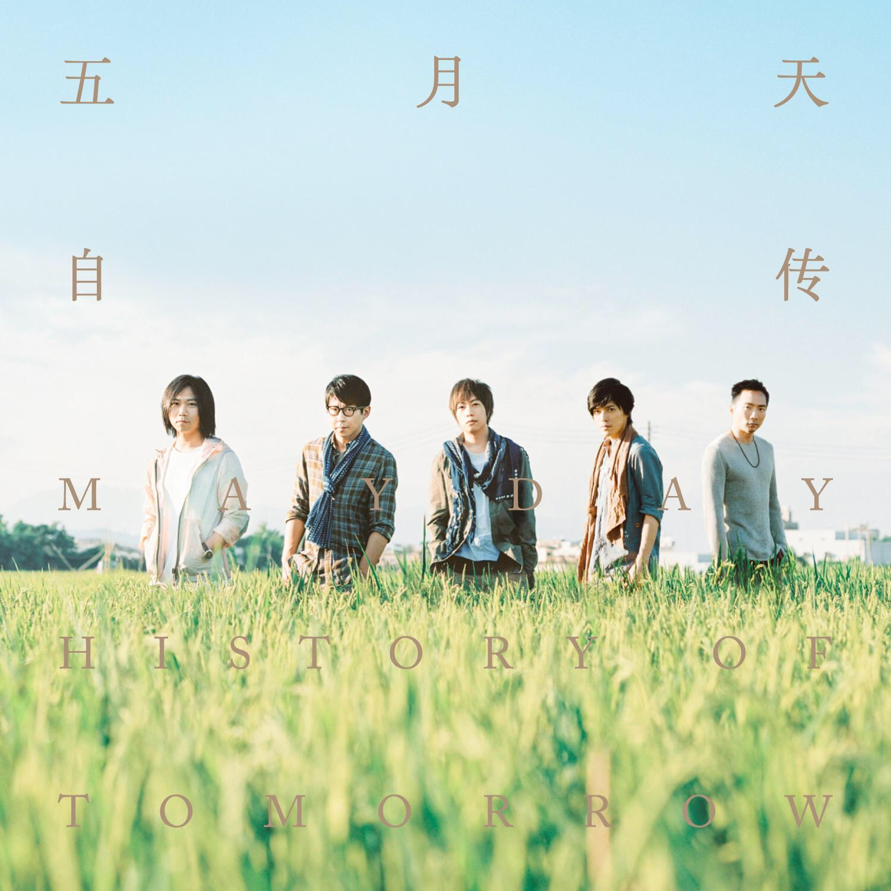

五月天（Mayday）

五月天（英语： MayDay） 是于 1999 年出道的 台湾乐团，由主唱阿信、团长暨吉他手怪兽、吉他手石头、贝斯手玛莎和鼓手冠佑共五人组成；
除冠佑外，其余四人皆毕业自台北市国立师大附中。
乐团前身为 “So Band” 乐团，于 1997 年 3 月 29 日改为现名，其名称取自玛莎在 BBS 的代号 “MayDay”。
周杰伦
乐团历程
五月天自 1999 年 7 月 7 日正式出道，现已发行了 9 张录音室专辑、4 张精选辑（其中 2 张分别为在中国大陆与日本出道发行）和数张演唱会专辑，
销售数量俱佳，在各地举办无数巡回演唱会，屡屡创下地方演唱会纪录与商机。
出道后共计八次入围、其中四次夺下金曲奖 “最佳乐团奖”（截至 2017 年 6 月）。
- 1995－97 年：So Band
- 1997－99 年（五月天正式出道年）：地下到主流
- 1999－2001 年：《爱情万岁》与《人生海海》
- 2001－05 年：退伍复出后到《知足》
- 2006－07 年：《为爱而生》与 “离开地球表面” 演唱会
- 2008 年：《后青春期的诗》与 “十万人出头天” 演唱会
- 2009－10 年：第三座 “最佳乐团奖” 与 “D.N.A” 演唱会
- 2011 年：电影 “追梦 3DNA” 与《第二人生》
- 2012 年：六座金曲奖与专辑十白金殊荣、首登北京鸟巢
- 2013 年：电影 “诺亚方舟” 到《步步》
- 2014 年：麦迪逊广场花园开唱
- 2015 年：登日本武道馆
- 2016 年：《自传》
- 2017－18 年：“人生无限公司” 巡回 与 成军 20 周年
- 2019 年：电影 “人生无限公司 3D” 与 “蓝色三部曲” 20 周年
- 2020 年 1 月 28 日，〈我不愿让你一个人〉之音乐录影带于 YouTube 的观看次数突破 1 亿次。同年 5 月 31 日，五月天举行 “突然好想见到你” Mayday live in the sky
线上演唱会，该直播在各大播出平台累积超过 4 千万人次观看，并登上台湾、香港、新加坡 YouTube 发烧影片首位 。10 月 18 日，〈 后来的我们〉之音乐录影带于 YouTube
的观看次数突破 1亿次 。
- 2020 年 11 月 7 日，相信音乐宣布五月天于 2020 年底至 2021 年年初举行 “好好好想见到你” Mayday Fly to 2021 演唱会。2020 年 12 月 26、27、31 日及 2021
年 1 月
- 1、2 日于桃园国际棒球场举行 5 场，后于 12 月 25 日加开 1 场，共计 6 场；2021 年 2 月 17、18、20、21、22 日于台中洲际棒球场举行 5 场；2021 年 3 月
20、21、27、28、29
- 日于台南市立体育场连续举行五场；此次演唱会相信音乐及五月天提供 6,000 张门票，委由桃园、台中、台南卫生局及护理师护士公会联合会等相关单位，邀请辛劳的医护人员参与 。
音乐专辑
| 年份 |
专辑名 |
| 1999年 |
五月天第一张创作专辑 |
| 2000年 |
爱情万岁 |
| 2001年 |
人生海海 |
| 2003年 |
时光机 |
| 2004年 |
神的孩子都在跳舞 |
| 2006年 |
为爱而生 |
| 2008年 |
后青春期的诗 |
| 2011年 |
第二人生 |
| 2016年 |
自传 |
早年经历
- 1992 年至 1994 年，阿信、怪兽、玛莎、石头先后结识于台湾师范大学附属中学，加入师大附中的吉他社，开启了音乐旅程。
- 1995 年，还在读高中的吉他手怪兽、主唱阿信，以及第一任的鼓手钱佑达组成名为 “So Band”
的乐团，之后贝斯手玛莎加入。四人自高中毕业后，分别进入不同的大学就读，但乐团并未停止活动，持续在许多酒吧、餐厅驻唱表演。
- 1997 年，野台开唱活动前，加入了吉他手石头，为了报名参加野台开唱，五人使用玛莎在网络 BBS 的代号 “MAYDAY” 作为团名，正式更名为 “五月天”。3 月 29 日五月天野台开唱，正式组成乐队。
- 1998 年 1 月，发行第一张乐团合辑《ㄞ国歌曲》。
- 1998 年 6 月，发行华语第二张同志专辑《拥抱》。
- 1999 年，第四任鼓手冠佑加入乐团，主唱阿信把成军时间改为冠佑加入后。
成就和榮譽
- 1999 飞碟电台最受欢迎团体第二名 （获奖）
- 1999 三立都会台音乐风云榜观众票选最受欢迎团体第一名 （获奖）
- 1999 GTV 娱乐百分百观众票选最受欢迎团体第一名 （获奖）
- 1999 飞碟电台七月之星第二名 （获奖）
- 2000 7 月钱柜 KTV 连续 52 周冠军歌曲 《志明与春娇》 （获奖）
- 2000 第十一届台湾金曲奖 最佳演唱团体 《第一张创作专辑》 （提名）
- 2000 钱柜 KTV 国台语双料冠军 《温柔》《心中无别人》《憨人》《志明与春娇》 （获奖）
- 2000 中华音乐人交流协会 99 年度十大单曲 《志明与春娇》 （获奖）
- 2000 HIT FM 年度最佳单曲 《温柔》 （获奖）
- 2001 HIT FM 年度单曲 《人生海海》、《好不好》 （获奖）
- 2001 Channel 港台最受欢迎团体 （获奖）
- 2001 中国时报娱乐周报年度十大人气偶像时报悦读 ——2001 好书大赏文字书获得店家销售 TOP20 第七名与网站销售榜 TOP20 第一名 《五月天素人自拍》 （获奖）
- 2001 新加坡金曲奖最佳团体 （获奖）
- 2001 第八届华语音乐榜中榜港台最受欢迎团体 （获奖）
- 2001 新加坡金曲奖最佳组合，新加坡醉心 FM93.3 年度十大专辑 （获奖）
- 2001 CHANNEL 年度最佳团体及 TOP20 国语歌曲 （获奖）
- 2001 金曲奖最佳乐团奖 《爱情万岁》 （获奖）
- 2001 新加坡 FM93.3 年度 10 大专辑 （获奖）
- 2001 1 月中国时报票选十大人气偶像及年度 10 大专辑 （获奖）
- 2001 中华音乐人交流协会年度十大优良专辑与最佳单曲 《爱情万岁》 （获奖）
- 2001 中华音乐人交流协会年度最佳单曲 《温柔》 （获奖）
- 2002 Channel 第九届华语榜中榜最受欢迎组合奖 （获奖）
- 2002 入围金曲奖 “最佳流行音乐演唱专辑奖” 及 “最佳乐团奖” （提名）
- 2002 台湾风云榜年度最佳销售团体、MTV 台 TOP20, 及最爱台北精神奖 （获奖）
- 2002 2001 年度台湾风云榜年度最佳销售团体 （获奖）
- 2003 中国时报 2003 年度十大专辑《时光机》 （获奖）
- 2003 年度 TVB-8 金曲榜、TVB-8 频道金曲榜最佳乐队，金奖 （获奖）
- 2003 第十五届台湾金曲奖最佳乐团奖 《时光机》 （获奖）
- 2003 自由时报 2003 年度十大专辑 《时光机》 （获奖）
- 2004 MusicRadio 中国 TOP 排行榜，港台年度金曲: 《倔强》 （获奖）
- 2004 中华音乐人交流协会 2004 年度十大优良专辑 《神的孩子都在跳舞》 （获奖）
- 2004 第四届百事音乐风云榜，2003 年度最佳组合 （获奖）
- 2004 新加坡金曲奖、最佳组合 《时光机》 （获奖）
- 2004 第九届华语榜中榜最受欢迎组合奖 （获奖）
- 2004 第四届全球华语歌曲排行榜最受欢迎乐团 （获奖）
- 2004 第一届「一日志工金像奖」之「最佳青年志工奖」 （获奖）
- 2004 MusicRadio 中国 TOP 排行榜，校园人气潜力歌手奖 （获奖）
- 2004 MusicRadio 中国 TOP 排行榜，港台年度最佳编曲 《宁夏》 （获奖）
- 2004 MusicRadio 中国 TOP 排行榜，年度最佳乐团：五月天 （获奖）
- 2004 HITO 流行音乐奖，年度 HITO 乐团、年度 HITO 十大歌曲 《武装》 （获奖）
- 2004 中华音乐人交流协会 2004 年十大单曲 《倔强》 （获奖）
- 2005 中华音乐人交流协会 2005 年十大单曲 《知足》 （获奖）
- 2005 第六届全球华语排行榜最佳作词奖 五月天阿信《丝路》 （获奖）
- 2005 新加坡金曲奖最佳唱片制作 《神的孩子都在跳舞》 （获奖）
- 2005 第五届百事音乐风云榜最佳摇滚专辑 《神的孩子都在跳舞》 （获奖）
- 2005 Music Radio 中国 TOP 排行榜港台最佳乐团 （获奖）
- 2005 第五届全球华语歌曲排行榜最佳编曲奖 《燕尾蝶》 （获奖）
- 2005 第十届全球华语音乐榜中榜最佳组合乐队奖 (港台) （获奖）
- 2005 第十一届全球华语音乐榜中榜港台最佳乐队 （获奖）
- 2005 港台十大金曲 《倔强》、《燕尾蝶》 （获奖）
- 2005 KKBOX 数位音乐风云榜年度十大艺人；年度十大专辑 《知足最真杰作选》 （获奖）
- 2005 MTV 超级盛典最具风格时尚艺人 （获奖）
- 2005 HITO 流行音乐奖年度 HITO 乐年度 HITO 十大华语歌曲 《倔强》 （获奖）
- 2005 香港新城国语力颁奖礼新城国语力歌曲 《倔强》 （获奖）
- 2005 第六届全球华语排行榜最受欢迎乐团奖 （获奖）
- 2005 第六届全球华语排行榜最受欢迎创作团体 （获奖）
- 2005 新加坡金曲奖最佳乐团 （获奖）
- 2005 新加坡金曲奖最佳创作歌手 （获奖）
- 2005 百事音乐风云榜最佳摇滚乐队 （获奖）
- 2005 第五届全球华语歌曲排行榜最受欢迎乐团奖 （获奖）
- 2005 第五届全球华语歌曲排行榜年度 25 大歌曲 《倔强》 （获奖）
- 2005 新城国语力乐团奖亚洲乐团奖 （获奖）
- 2006 第十二届全球华语音乐榜中榜，最佳乐队奖 （获奖）
- 2006 HITO 流行音乐奖，最受欢迎乐团 （获奖）
- 2006 “华众曲宠 - 2006 TVBS 华语金曲榜” 最佳乐团 （获奖）
- 2006 “华众曲宠 - 2006 TVBS 华语金曲榜” 最佳十大专辑 《知足》、《最真杰作选》 （获奖）
- 2007 风尚大典风尚年度音乐组合奖 （获奖）
- 2007 第七届全球华语歌曲排行榜最受欢迎组合奖 （获奖）
- 2007 新加坡金曲奖最佳乐团奖 《为爱而生》 （获奖）
- 2007 第十三届华语榜中榜最佳乐队奖 (港台部分) （获奖）
- 2007 第五届特步东南劲爆音乐榜劲爆最佳专辑 《为爱而生》 （获奖）
- 2007 Music Radio 中国 TOP 排行榜音乐创作年度最佳编曲 《天使》 （获奖）
- 2007 北京流行音乐，年度最受欢迎乐队 (港台) （获奖）
- 2007 KKBOX 数位音乐风云榜 年度十大风云歌手；年度最佳团体 （获奖）
- 2007 MTV 超级盛典最具风格组合 （获奖）
- 2007 特步东南劲爆音乐榜劲爆最佳乐团 （获奖）
- 2008 Y.E.S 933 醉心龙虎榜年度十大金曲《小太阳》 （获奖）
- 2008 第八届全球华语歌曲排行榜榜最受欢迎乐团 （获奖）
- 2008 Music Radio 音乐之声中国 TOP 排行榜港台年度最佳唱片 《后青春期的诗》 （获奖）
- 2008 MusicRadio 中国 TOP 排行榜港台年度最佳乐团 （获奖）
- 2008 HITO 流行音乐奖，HITO 团体、最受欢迎乐团、年度十大华语歌曲 《天使》 （获奖）
- 2008 年度 TVB-8 金曲榜，最佳作词奖 阿信《抓狂》 （获奖）
- 2008 《后青春期的诗》获得台湾地区 G-music 和五大唱片，年销量双料冠军 （获奖）
- 2008 新加坡金曲奖，舞台魅力奖、亚洲传媒大奖 （获奖）
- 2008 Music Radio 音乐之声中国 TOP 排行榜，港台年度最受欢迎乐团 （获奖）
- 2008 北京流行音乐典 (中歌榜), 年度最受欢迎乐队 (港台) （获奖）
- 2008 北京流行音乐典年度金曲 《你不是真正的快乐》 （获奖）
- 2009 第十五届新加坡金曲奖，年度专辑大奖、最佳乐团、最受欢迎团体、榜上风光奖、亚洲传媒大奖 （获奖）
- 2009 KKBOX 数位音乐风云榜 十大风云歌手 （获奖）
- 2009 第二十届台湾金曲奖，最佳乐团奖：五月天 / 后青春期的诗 （获奖）
- 2009 HITO 流行音乐奖，亚洲传媒大奖、HITO 作词人奖 （获奖）
- 2009 年度十大华语歌曲:《突然好想你》,HITO 乐团，蝉联冠军最久专辑 （获奖）
- 2009 北京流行音乐典礼 (中歌榜), 年度最受欢迎乐团 (港台)、年度金曲《突然好想你》 （获奖）
- 2010 MusicRadio 中国 TOP 排行榜，港台年度最佳乐团 （获奖）
- 2010 第十届 CCTV-MTV 音乐盛典，港澳台地区年度最佳组合 / 乐队：五月天 （获奖）
- 2010 第十届 CCTV-MTV 音乐盛典，港台地区最佳乐团奖 （获奖）
- 2010 台湾演艺界 “十大吸金歌手” （获奖）
- 2011 KKBOX 数位音乐风云榜 年度十大风云歌手 （获奖）
- 2012 第 23 届台湾金曲奖最佳作曲人奖 (玛莎 / 诺亚方舟) （获奖）
- 2012 2012 年度青春励志人物榜单年度青春励志人物提名 （提名）
- 2012 台湾金曲奖最佳年度歌曲奖 (诺亚方舟 / 第二人生 (no where - 末日版)) （获奖）
- 2012 第二届全金榜的五个奖项 （获奖）
- 2012 第 23 届台湾金曲奖最佳专辑制作人奖 (第二人生 (no where - 末日版)) （获奖）
- 2012 第 23 届台湾金曲奖最佳编曲人奖 (with 陈建骐 / 诺亚方舟) （获奖）
- 2012 第 23 届台湾专金曲奖最佳国语辑奖 (第二人生 (no where - 末日版)) （获奖）
- 2012 第 23 届台湾金曲奖最佳乐团奖 （获奖）
- 2013 第三十五届十大中文金曲：全年最高销量歌手大奖 - 组合奖 （获奖）
- 2014 第四届全球流行音乐金榜 年度最受欢迎组合 / 乐团 （获奖）
- 2014 第四届全球流行音乐金榜 年度最佳乐团 （获奖）
- 2014 第四届全球流行音乐金榜 年度 20 大金曲 （获奖）
- 2017 第 28 届金曲奖最佳国语专辑 《自传》 （获奖）
- 2017 第 28 届金曲奖最佳乐团 （提名）
- 2017 Billboard Radio China 2016 年度华语十大金曲 《后来的我们》 （获奖）
- 2017 第 28 届金曲奖最佳作词人（陈信宏） 《成名在望》 （获奖）
社会生活
2000 年 9 月，九二一大地震后，石头与怪兽私下前往灾区埔里，做了一星期的义工。
2005 年 1 月 8 日，捐赠新台币 100 万给红学会，参加南亚海啸赈灾演唱会。
2012 年 3 月 3 日，在台中体育场举办《Just Love It 我不愿让你一个人》慈善公益演唱会，当晚共捐出 1800 万台币。
并连续三年举办《Just Love It！》公益演唱会，号召歌迷共同关注教育、医疗等扶助的弱势族群。